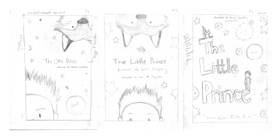
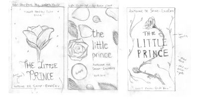
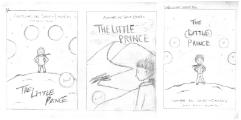
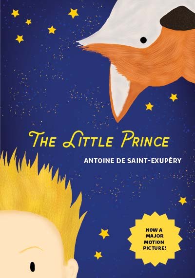
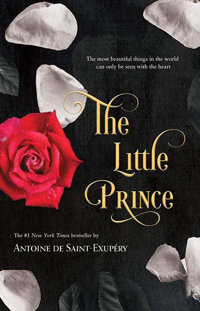
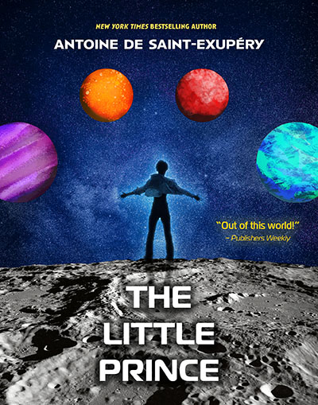
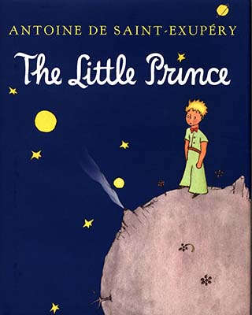

Date
Fall 2021
Role
Graphic Design
Layout Design
Typography
Tools
Photoshop
InDesign
Illustrator
The redesign of The Little Prince book cover is a student project for a graphic design class. The task for the project was to redesign the original cover and create three redesigns that would recategorize the novel under different genres and be directed towards different audience groups. The challenge was to explore a variety of different typefaces, layouts, and visual approaches so that they would easily be identifiable for their corresponding audiences.
The project began with researching the different audience groups, which were Children’s Fairy Tale (ages 6-11), Fantasy Dark Romance (ages 24-28), and Sci-Fi Adventure (ages 11-16). After exploring various book examples, I sketched out different ideas for each of the covers and their various mocked genres.



The Children’s Fairy Tale cover incorporates themes of playfulness, where the cover has both the main character of the Little Prince and his friend the fox peeking out on both sides of the cover. To interest children to the book cover, I used bold colours as incorporated type that welcomes a friendly approach to the novel.
The Children’s Fairy Tale cover incorporates themes of playfulness, where the cover has both the main character of the Little Prince and his friend the fox peeking out on both sides of the cover. To bring attention to the cover for children, I used eye-popping colours and rounded typefaces that welcome a friendly approach to the novel.
The Sci-Fi Adventure cover communicates themes of action and exploration, where the main character poses at the front of the cover to show that they are ready to start their space adventure. The combination with the type, texture and shapes allows the overall composition to be cohesive and dynamic.




From left to right and top to bottom. The Children's Fairy Tale cover. The Fantasy Dark Romance Cover. The Sci-Fi Adventure Cover. The original published book cover.